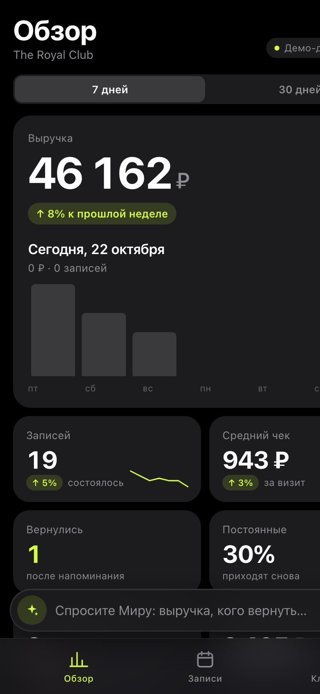
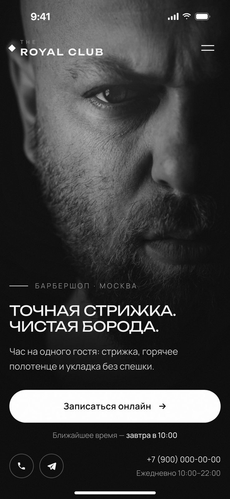

Сайты и Telegram-боты,которые приводят клиентов
Для салонов, автосервисов, клиник и магазинов: онлайн-запись, заявки и CRM, которые работают, пока вы заняты делом
Получить бесплатный аудитПервый шаг — бесплатный аудит.
Покажу, где ваш бизнес теряет заявки
и что с этим сделать.
Кейсы
Первый — мой настоящий магазин, остальные концепты. Всё можно открыть и потрогать
Меня зовут Даниэль
У меня свой товарный бизнес, и я оптимизировал его с помощью мини-приложения и бота. Поэтому знаю, как заявки теряются в переписке и как клиент уходит, пока ему не ответили.
- Общаетесь напрямую со мной, без менеджеров и передачи задач
- Цену и сроки называю до начала работы
- Показываю промежуточные версии, а не только готовый результат
Где бизнес
теряет клиентов?
Четыре места, где чаще всего уходят деньги, и как это исправить
[STUDIO]
клиент записывается сам, заявки не теряются, а всё важное у вас в телефоне
Услуги
Нажмите на папку, чтобы посмотреть, что входит в работу
Сколько стоит
Ориентиры, чтобы понимать бюджет. Точную цену называю после аудита
Частые вопросы
Сколько стоит?
Аудит и консультация — бесплатно. Сайт или лендинг с заявками — от 15 000 ₽. Telegram-бот или мини-приложение — от 10 000 ₽. CRM, автоматизация и ИИ-ассистенты — от 20 000 ₽. Точную цену называю после аудита, до начала работы.
Что нужно от меня?
Короткий разговор о задаче, ваши цены и фото, если есть. С остальным помогу.
Нужен ли хостинг и домен?
Помогу купить домен и разместить сайт. Простой сайт или бот можно держать на бесплатном хостинге (Cloudflare, GitHub Pages) — ежемесячной оплаты за сервер не будет.
Что такое
бесплатный аудит
Письменный разбор вашего бизнеса в течение суток, без созвона и обязательств
На сайт, карточку в Яндекс.Картах или 2ГИС, Telegram-канал
Понятны ли цены, можно ли записаться, что происходит с заявкой вечером
Где уходят заявки и что с этим сделать, даже если вы не закажете у меня


[КОНТАКТЫ]
Напишите мне
Разберу ваш бизнес на бесплатном аудите и покажу, где теряются заявки и как это исправить. Отвечаю в течение дня.
Telegram ↗